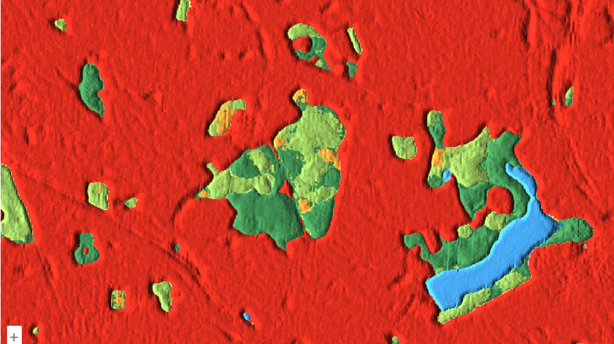

7 Week 8: GEE Classification II
7.1 Summary
This week we continued exploring classification, focusing specifically on evaluating models, dealing with unbalanced data and spatial autocorrelation.
7.1.1 Object based image analysis
Revisiting some of the reading from last week and building on my understanding of OBIA was useful, I think it helped me think of the ‘object’ as a group of similar pixels, based on their spectral properties like size, colour, shape and texture.
However this can be applied at various scales to extract meaningful information about a landscape, identifying larger ‘objects’ and smaller ones, whereas with pixel level analysis there is a limitation to the pixel resolution provided in the RS data.

The advantage of using OBIA is that it can provide a more fuzzy perspective, i.e. it accounts for the gradual changes from e.g. one land cover type to the next, whereas pixel analysis can be quite rigid.
OBIA can be broken down into two key steps:
Segmentation - dividing of the image to identify similar objects
Classification - classifying the obtained objects e.g. into land cover
The shapes we see in OBIA are classified based on the similarity (homogeneity) or difference (heterogeneity) of the cells. These are also referred to as superpixels.
To create these superpixels, various algorithms can be used, here I’ll summarise Simple Linear Iterative Clustering (SLIC), and Spectral Mixture Analysis (SMA).
7.1.1.1 SLIC
This algorithm simplifies an image into clusters of superpixels. You can define several parameters such as:
k - the number of super pixels
compactness - balance between physical distance and colour similarity (larger values create more regularly shaped superpixels, smaller values create more irregularly shaped superpixels)
By splitting an into regularly spaced out points and calculating the homegeneity of colours it divides the image into similar polygons of superpixels.

7.1.1.2 Advantages & limitations
A limitation of SLIC is that it relies on Euclidean distance to measure similarity between pixel feature vectors. This works well for continuous spectral data such as aerial or multispectral imagery, but may be inappropriate for other types of spatial raster data, for example, categorical rasters or high-dimensional temporal data, where Euclidean distance does not represent meaningful similarity.
It is also possible to cluster the superpixels above and dissolve some of the borders to make the difference between different types of objects clearer. An advantage of this method is that by looking at the spectral information in the image alongside colour and size it can perform classification better than pixel based methods.

7.1.1.3 Sub-pixel analysis
Looking again at pixel based analysis we learnt more about using sub-pixel analysis or SMA to identify the composition of materials within a single pixel. This is done to “decompose the measured reflectance within the instantaneous field of view (IFOV) of a single pixel as a mixture of a fixed set of endmembers” (Jensen (2015), p.480). This helps us identify the proportion of various land cover classes within a pixel.
However a limitation with this method is that it can be difficult to find all of the pure endmembers within an area (Jensen (2015), p.484), if the spatial resolution of the data we’re working with is lower resolution it can become difficult without collecting some ground data to identify endmembers.
There are some R packages (RStoolbox) and algorithms like Multiple Endmember Spectral Mixture Analysis which improves on SMA by allowing the number of endmembers to vary per pixel. This is something I’d be interested to look at in R and reading about it in the context of identifying habitat diversity in the Cantabrian Mountains was interesting Fernández-García et al. (2021).
7.1.2 Evaluating accuracy
Classification algorithms are not perfect and knowing how to evaluate their accuracy is a key part of the research process. Using an error matrix/confusion matrix can be a useful way of looking at accuracy for binary classification models.
True Positive Correctly predicted positive result |
False Negative Incorrectly predicted negative result (was actually positive) |
False positive Incorrectly predicted positive result (was actually negative) |
True Negative Correctly predicted negative result |
| Term | Definition | Application |
|---|---|---|
| Recall (Producer Accuracy) | Assesses how well the model predicts positive results. Proportion of true positives detected from all positive instances. | High recall is needed when the cost of missing positive cases has significant consequences. For example, cancer detection. |
| Precision (User Accuracy) | Measures how many of the positive predictions were actually correct. | Important when minimising false positives is the goal, e.g. detecting spam emails. |
| Overall accuracy - F1 score | The F1 score combines both precision and recall into a single metric to balance their trade off. | Useful for judging the overall accuracy of a model but may not be suited to all instances, sometimes higher precision or recall may be more important to focus on. |
You can also use a confusion matrix to evaluate multi-class data by changing it into a fuzzy matrix which can evaluate the accuracy of predicting various classes e.g. urban, forest or water.
7.1.3 Unbalanced data
This is a problem I have personally come across before with my initial work with machine learning to identify residents at risk of homelessness or council tax arrears. Given that both instances are fairly rare as a proportion of the Borough’s population, my initial models were showing high accuracy simply because it was predicting everyone as not in arrears or not having made a homeless application. And because my positives were around 1-3% it was difficult to strike a balance between recall and precision, even when changing the thresholds I struggled to make a convincing case about the accuracy of my model and its applicability.
The ROC Curve (Receiver Operating Characteristic Curve) was another helpful way to determine how well the model was predicting outcomes based on the classification thresholds we set in a model (to either maximise recall or precision). The ROC curve is plotted using the True Positive Rate vs the False Positive Rate. Broadly a value of 0.5 means the model is as good as making a random guess, while a value of 1 is a perfectly accurate model.

7.2 Applications
One application of these classification methods that has been really interesting to learn about is the Dynamic World Land Cover data which is a near real time collection of land cover across the world. It has a 10m resolution and uses the Fully Convolutional Neural Network (FCNN) algorithm to map land cover based on the probability that a pixel belongs to a single class. It provides 9 possible classes of Land Cover which are:
Water
Trees
Grass
Flooded Vegetation
Crops
Shrub and scrub
Built
Bare
Snow and ice
It is interesting to me that this algorithm is semi-supervised i.e. it involves both human and machine learning input, with experts labeling nearly 4000 image tiles.
The fact it works with new images fairly quickly classifying them within 20 minutes to an hour is also impressive. It is also possible to recreate the model in GEE and look at things like change detection and time series modelling which I am keen to explore at work. I think at a 10m resolution it would be useful for identifying areas which have become more green with trees, as this model can differentiate fairly well between trees and grass. It could definitely have monitoring uses for urban greening policies. For example, when looking at Fryent Park in Brent the model is able to distinguish well between trees and grass.

To compare this to an OBIA study of land cover I found an interesting paper about monitoring tree cover in Seattle using freely available aerial photography and comparing it to a satellite based OBIA approach. They note that OBIA approaches outperformed the pixel-based classification when looking at hyperspatial imagery in urban settings Moskal, Styers, and Halabisky (2011).

I think this approach while more resource intensive, due to the need to collect ground points, and computationally intensive (not sure if it is possible to recreate OBIA on a global scale) does have its advantages in being more accurate in classifying impervious surfaces such as roads and buildings separately. However replicating similar analysis for change detection and green cover monitoring could be feasible at a borough or city wide level.
7.3 Reflections
I think being familiar with some of the ways to evaluate machine learning models through recall, precision, F1 and ROC was helpful and I can see how these fit with the classification algorithms we’ve been using on remotely sensed data. There is definitely more I need to revisit to better understand evaluating algorithms via things like Kappa and paying more attention to the sampling and cross validation methods such as LOOVC.
In the context of my day-to-day work at a Local Authority I think it can be challenging to convey the caveats with predictive models and to non-technical stakeholders. I think this may be possibly easier to explain with satellite data given the visual outputs of classifications, and this is something I have started showing to various teams at the Council to try to come up with useful applications of RS classification.
There was a lot of additional content this week which I ran out of space to summarise relating to cross validation and spatial autocorrelation, which are both also important to take into account when carrying out classification analysis. I need to spend more time with both to understand how to integrate them into future GEE projects.